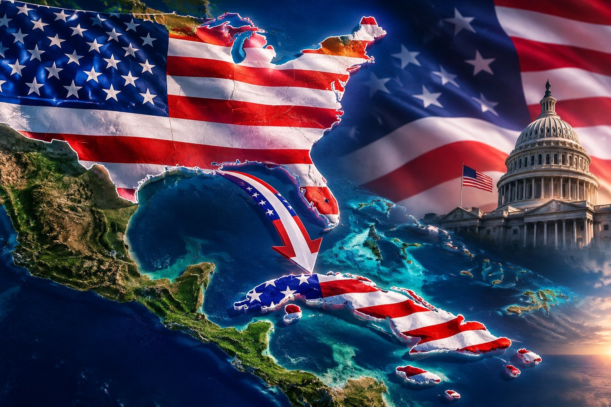

Aquí se puede formar una idea clara de la anexión. No es un lema ni una consigna. Los artículos explican qué significa que un país incorpore un territorio, cómo lo ha hecho Estados Unidos con Texas y Hawái, y qué se discute cuando se plantea que Cuba pase a formar parte de la Unión. Cada texto se puede leer solo. Juntos dan el mapa: la historia, el significado y las maneras de anexar.
Artículos
Ante la proximidad de la caída del comunismo en Cuba impulsado por la terminación de la subvención que les llegaba de Venezuela se aproxima…
Leer artículoLa historia de Texas es una de las más singulares de América del Norte. A lo largo de los siglos, este territorio pasó por el dominio de distintas naciones…
Leer artículoHawái no se anexó como Texas. En 1893 un grupo local derrocó a la reina con apoyo del enviado de Estados Unidos…
Leer artículo
04A unas 100 millas de Florida, Cuba ocupa una posición estratégica. Para quienes defienden la anexión, integrar la isla a Estados Unidos es una oportunidad económica y de seguridad, no una solución mágica.
Leer artículo 05
05Texas, Hawái, Puerto Rico, Guam, Samoa Americana, las Islas Vírgenes y las Marianas del Norte muestran qué significa pasar a soberanía de Estados Unidos, y qué no.
Leer artículo 06
06Tratado, resolución conjunta, cesión después de una guerra y admisión como estado. Sin un acto del Congreso y una cesión de soberanía, no hay anexión.
Leer artículoAnexionistas
Cubanos que defienden la anexión a los Estados Unidos: su rostro, su historia y su perfil.
Ver Anexionistas